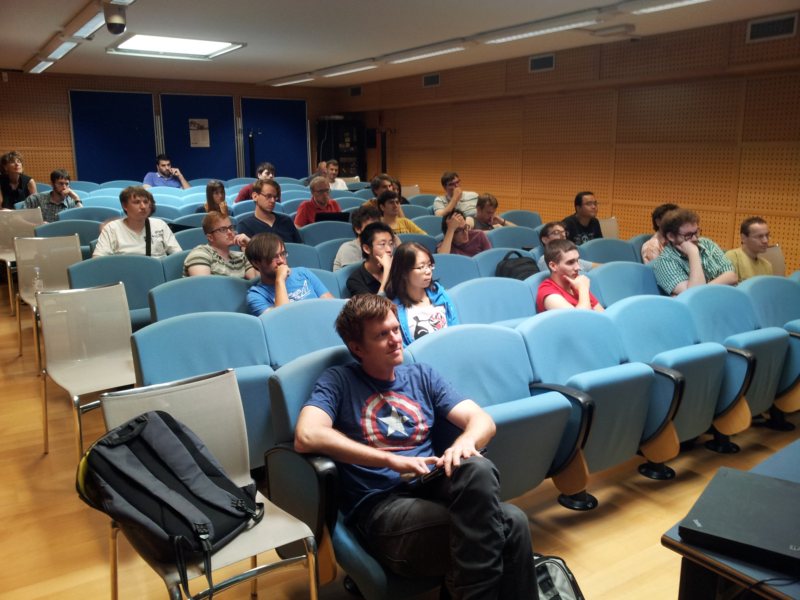
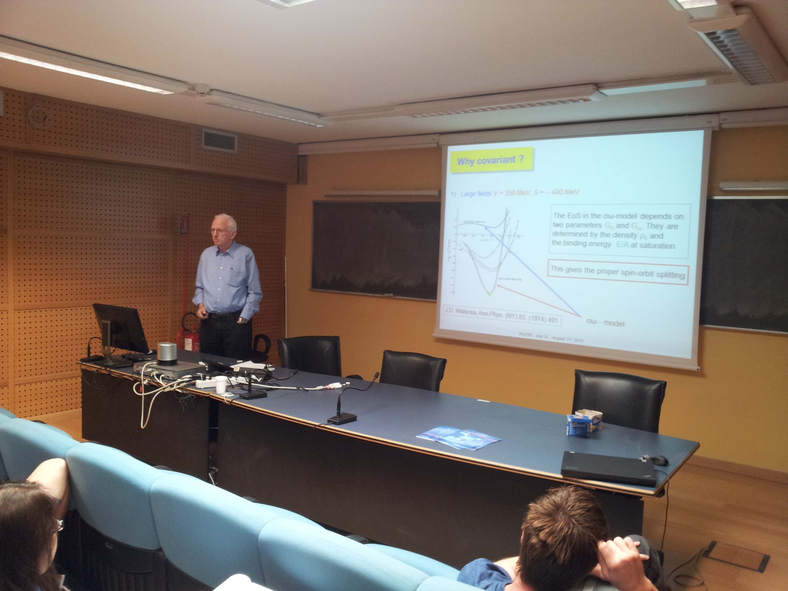
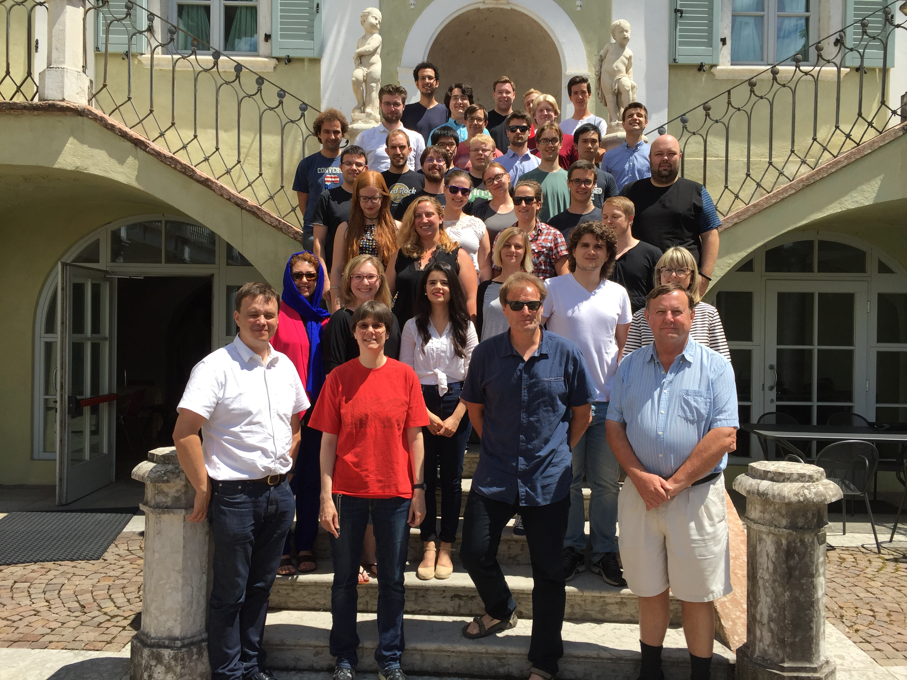
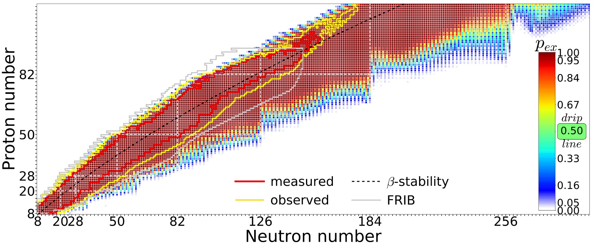
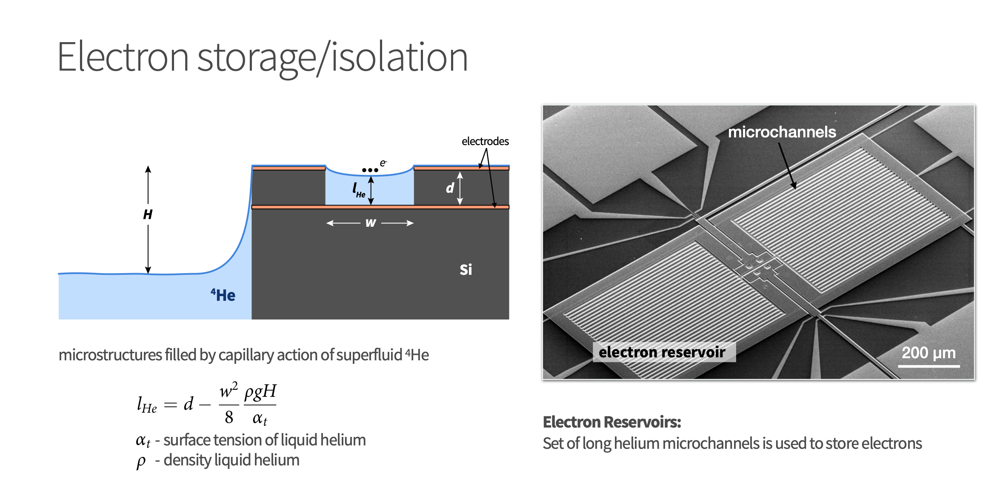
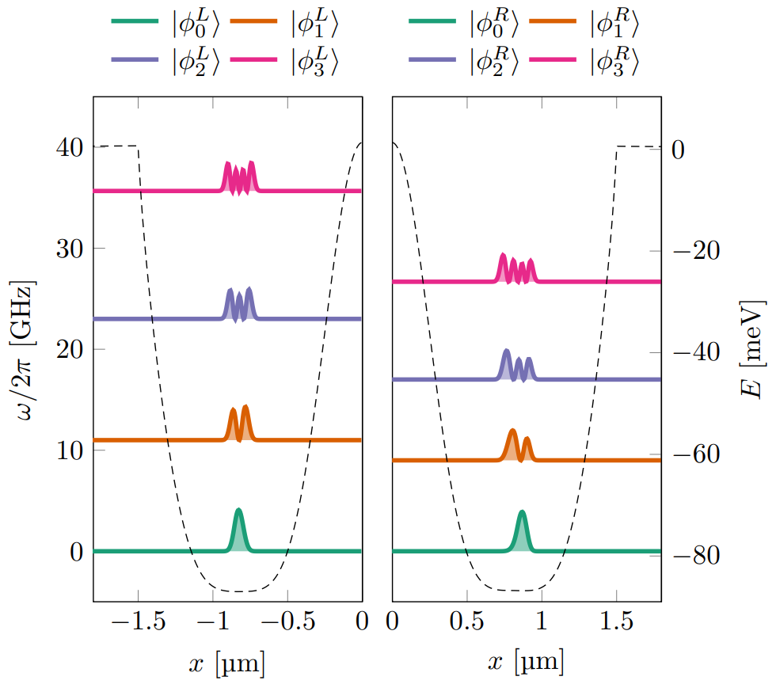

Thirty Years of Education and Research on Nuclear Many-
Body Physics at the ECT*; from traditional methods to quantum computing and machine learning
30th anniversary ECT*, October 4, 2023
What is this talk about?
The main emphasis is to give you a short and pedestrian introduction to the whys and hows we can use (with several examples) machine learning methods in nuclear physics. And why this could (or should) be of interest.
These slides are at https://mhjensenseminars.github.io/MachineLearningTalk/doc/web/overview.html. Scroll down the page.
Thanks to many
Jane Kim (MSU), Julie Butler (MSU), Patrick Cook (MSU), Danny Jammooa (MSU), Daniel Bazin (MSU), Dean Lee (MSU), Witek Nazarewicz (MSU), Michelle Kuchera (Davidson College), Even Nordhagen (UiO), Robert Solli (UiO, Expert Analytics), Bryce Fore (ANL), Alessandro Lovato (ANL), Stefano Gandolfi (LANL), Francesco Pederiva (UniTN), and Giuseppe Carleo (EPFL). Excuses to those I have omitted.
Education

Education

Education

A simple perspective on the interface between ML and Physics

ML in Nuclear Physics

AI/ML and some statements you may have heard (and what do they mean?)
- Fei-Fei Li on ImageNet: map out the entire world of objects (The data that transformed AI research)
- Russell and Norvig in their popular textbook: relevant to any intellectual task; it is truly a universal field (Artificial Intelligence, A modern approach)
- Woody Bledsoe puts it more bluntly: in the long run, AI is the only science (quoted in Pamilla McCorduck, Machines who think)
If you wish to have a critical read on AI/ML from a societal point of view, see Kate Crawford's recent text Atlas of AI
Here: with AI/ML we intend a collection of machine learning methods with an emphasis on statistical learning and data analysisScientific Machine Learning
An important and emerging field is what has been dubbed as scientific ML, see the article by Deiana et al Applications and Techniques for Fast Machine Learning in Science, arXiv:2110.13041
The authors discuss applications and techniques for fast machine learning (ML) in science – the concept of integrating power ML methods into the real-time experimental data processing loop to accelerate scientific discovery. The report covers three main areas
- applications for fast ML across a number of scientific domains;
- techniques for training and implementing performant and resource-efficient ML algorithms;
- and computing architectures, platforms, and technologies for deploying these algorithms.
Machine Learning and Physics
Machine learning is an extremely rich field, in spite of its young age. The increases we have seen during the last three decades in computational capabilities have been followed by developments of methods and techniques for analyzing and handling large date sets, relying heavily on statistics, computer science and mathematics. The field is rather new and developing rapidly.
Popular software packages written in Python for ML are
and more. These are all freely available at their respective GitHub sites. They encompass communities of developers in the thousands or more. And the number of code developers and contributors keeps increasing.
Lots of room for creativity
Not all the algorithms and methods can be given a rigorous mathematical justification, opening up thereby for experimenting and trial and error and thereby exciting new developments.
A solid command of linear algebra, multivariate theory, probability theory, statistical data analysis, optimization algorithms, understanding errors and Monte Carlo methods is important in order to understand many of the various algorithms and methods.
Job market, a personal statement: A familiarity with ML is almost becoming a prerequisite for many of the most exciting employment opportunities. And add quantum computing and there you are!
Types of machine learning
The approaches to machine learning are many, but are often split into two main categories. In supervised learning we know the answer to a problem, and let the computer deduce the logic behind it. On the other hand, unsupervised learning is a method for finding patterns and relationship in data sets without any prior knowledge of the system. Some authours also operate with a third category, namely reinforcement learning. This is a paradigm of learning inspired by behavioural psychology, where learning is achieved by trial-and-error, solely from rewards and punishment.
Main categories
Another way to categorize machine learning tasks is to consider the desired output of a system. Some of the most common tasks are:
- Classification: Outputs are divided into two or more classes. The goal is to produce a model that assigns inputs into one of these classes. An example is to identify digits based on pictures of hand-written ones. Classification is typically supervised learning.
- Regression: Finding a functional relationship between an input data set and a reference data set. The goal is to construct a function that maps input data to continuous output values.
- Clustering: Data are divided into groups with certain common traits, without knowing the different groups beforehand. It is thus a form of unsupervised learning.
Machine learning and nuclear theory (my bias): Why?
- ML tools can help us to speed up the scientific process cycle and hence facilitate discoveries
- Enabling fast emulation for big simulations
- Revealing the information content of measured observables w.r.t. theory
- Identifying crucial experimental data for better constraining theory
- Providing meaningful input to applications and planned measurements
- ML tools can help us to reveal the structure of our models
- Parameter estimation with heterogeneous/multi-scale datasets
- Model reduction
- ML tools can help us to provide predictive capability
- Theoretical results often involve ultraviolet and infrared extrapolations due to Hilbert-space truncations
- Uncertainty quantification essential
- Theoretical models are often applied to entirely new nuclear systems and conditions that are not accessible to experiment
The plethora of machine learning algorithms/methods
- Deep learning: Neural Networks (NN), Convolutional NN, Recurrent NN, Boltzmann machines, autoencoders and variational autoencoders and generative adversarial networks
- Bayesian statistics and Bayesian Machine Learning, Bayesian experimental design, Bayesian Regression models, Bayesian neural networks, Gaussian processes and much more
- Dimensionality reduction (Principal component analysis), Clustering Methods and more
- Ensemble Methods, Random forests, bagging and voting methods, gradient boosting approaches
- Linear and logistic regression, Kernel methods, support vector machines and more
- Reinforcement Learning
- Generative models and more
Examples of Machine Learning methods and applications in nuclear physics
- Machine learning for data mining: Oftentimes, it is necessary to be able to accurately calculate observables that have not been measured, to supplement the existing databases.
- Nuclear density functional theory: Energy density functional calibration involving Bayesian optimization and ML.
- Nuclear properties with ML: Improving predictive power of nuclear models by emulating model residuals.
- Effective field theory and A-body systems: Truncation errors and low-energy coupling constant calibration, nucleon-nucleon scattering calculations, variational calculations with ANN for light nuclei, NN extrapolation of nuclear structure observables
- Nuclear shell model UQ: ML methods have been used to provide UQ of configuration interaction calculations.
Examples of Machine Learning methods and applications in nuclear physics, continues
- Low-energy nuclear reactions UQ: Bayesian optimization studies of the nucleon-nucleus optical potential, R-matrix analyses, and statistical spatial networks to study patterns in nuclear reaction networks.
- Neutron star properties and nuclear matter equation of state: constraining the equation of state by properties on neutron stars and selected properties of finite nuclei
- Experimental design: Bayesian ML provides a framework to maximize the success of on experiment based on the best information available on existing data, experimental conditions, and theoretical models.
More examples
The large amount of degrees of freedom pertain to both theory and experiment in nuclear physics. With increasingly complicated experiments that produce large amounts data, automated classification of events becomes increasingly important. Here, deep learning methods offer a plethora of interesting research avenues.
- Reconstruction of particle trajectories or classification of events are typical examples where ML methods are being used. However, since these data can often be extremely noisy, the precision necessary for discovery in physics requires algorithmic improvements. Research along such directions, interfacing nuclear physics with AI/ML is expected to play a significant role in physics discoveries related to new facilities. The treatment of corrupted data in imaging and image processing is also a relevant topic.
- Design of detectors represents an important area of applications for ML/AI methods in nuclear physics.
And more
- An important application of AI/ML methods is to improve the estimation of bias or uncertainty due to the introduction of or lack of physical constraints in various theoretical models.
- In theory, we expect to use AI/ML algorithms and methods to improve our knowledge about correlations of physical model parameters in data for quantum many-body systems. Deep learning methods show great promise in circumventing the exploding dimensionalities encountered in quantum mechanical many-body studies.
- Merging a frequentist approach (the standard path in ML theory) with a Bayesian approach, has the potential to infer better probabilitity distributions and error estimates. As an example, methods for fast Monte-Carlo- based Bayesian computation of nuclear density functionals show great promise in providing a better understanding
- Machine Learning and Quantum Computing is a very interesting avenue to explore.
Selected references
- Mehta et al. and Physics Reports (2019).
- Machine Learning and the Physical Sciences by Carleo et al
- Artificial Intelligence and Machine Learning in Nuclear Physics, Amber Boehnlein et al., Reviews Modern of Physics 94, 031003 (2022)
- Dilute neutron star matter from neural-network quantum states by Fore et al, Physical Review Research 5, 033062 (2023)
- Neural-network quantum states for ultra-cold Fermi gases, Jane Kim et al, Nature Physics Communcication, submitted
- Message-Passing Neural Quantum States for the Homogeneous Electron Gas, Gabriel Pescia, Jane Kim et al. arXiv.2305.07240,
- Efficient solutions of fermionic systems using artificial neural networks, Nordhagen et al, Frontiers in Physics 11, 2023
- Report from the A.I. For Nuclear Physics Workshop by Bedaque et al., Eur J. Phys. A 57, (2021)
- Particle Data Group summary on ML methods
What are the basic ingredients?
Almost every problem in ML and data science starts with the same ingredients:
- The dataset \( \mathbf{x} \) (could be some observable quantity of the system we are studying)
- A model which is a function of a set of parameters \( \mathbf{\alpha} \) that relates to the dataset, say a likelihood function \( p(\mathbf{x}\vert \mathbf{\alpha}) \) or just a simple model \( f(\mathbf{\alpha}) \)
- A so-called loss/cost/risk function \( \mathcal{C} (\mathbf{x}, f(\mathbf{\alpha})) \) which allows us to decide how well our model represents the dataset.
We seek to minimize the function \( \mathcal{C} (\mathbf{x}, f(\mathbf{\alpha})) \) by finding the parameter values which minimize \( \mathcal{C} \). This leads to various minimization algorithms. It may surprise many, but at the heart of all machine learning algortihms there is an optimization problem.
Argon-46 by Solli et al., NIMA 1010, 165461 (2021)
Representations of two events from the Argon-46 experiment. Each row is one event in two projections, where the color intensity of each point indicates higher charge values recorded by the detector. The bottom row illustrates a carbon event with a large fraction of noise, while the top row shows a proton event almost free of noise.

Quantum Monte Carlo and deep learning
Given a hamiltonian \( H \) and a trial wave function \( \Psi_T \), the variational principle states that the expectation value of \( \langle H \rangle \), defined through
$$
\langle E \rangle =
\frac{\int d\boldsymbol{R}\Psi^{\ast}_T(\boldsymbol{R})H(\boldsymbol{R})\Psi_T(\boldsymbol{R})}
{\int d\boldsymbol{R}\Psi^{\ast}_T(\boldsymbol{R})\Psi_T(\boldsymbol{R})},
$$
is an upper bound to the ground state energy \( E_0 \) of the hamiltonian \( H \), that is
$$
E_0 \le \langle E \rangle.
$$
In general, the integrals involved in the calculation of various expectation values are multi-dimensional ones. Traditional integration methods such as the Gauss-Legendre will not be adequate for say the computation of the energy of a many-body system. Basic philosophy: Let a neural network find the optimal wave function
Monte Carlo methods and Neural Networks
Machine Learning and the Deuteron by Kebble and Rios and Variational Monte Carlo calculations of \( A\le 4 \) nuclei with an artificial neural-network correlator ansatz by Adams et al.
Adams et al:
$$
\begin{align}
H_{LO} &=-\sum_i \frac{{\vec{\nabla}_i^2}}{2m_N}
+\sum_{i < j} {\left(C_1 + C_2\, \vec{\sigma_i}\cdot\vec{\sigma_j}\right)
e^{-r_{ij}^2\Lambda^2 / 4 }}
\nonumber\\
&+D_0 \sum_{i < j < k} \sum_{\text{cyc}}
{e^{-\left(r_{ik}^2+r_{ij}^2\right)\Lambda^2/4}}\,,
\tag{1}
\end{align}
$$
where \( m_N \) is the mass of the nucleon, \( \vec{\sigma_i} \) is the Pauli matrix acting on nucleon \( i \), and \( \sum_{\text{cyc}} \) stands for the cyclic permutation of \( i \), \( j \), and \( k \). The low-energy constants \( C_1 \) and \( C_2 \) are fit to the deuteron binding energy and to the neutron-neutron scattering length
Deep learning neural networks, Variational Monte Carlo calculations of \( A\le 4 \) nuclei with an artificial neural-network correlator ansatz by Adams et al.
An appealing feature of the neural network ansatz is that it is more general than the more conventional product of two- and three-body spin-independent Jastrow functions
$$
\begin{align}
|\Psi_V^J \rangle = \prod_{i < j < k} \Big( 1-\sum_{\text{cyc}} u(r_{ij}) u(r_{jk})\Big) \prod_{i < j} f(r_{ij}) | \Phi\rangle\,,
\tag{2}
\end{align}
$$
which is commonly used for nuclear Hamiltonians that do not contain tensor and spin-orbit terms. The above function is replaced by a four-layer Neural Network.
Explicit results

Dilute neutron star matter from neural-network quantum states by Fore et al, Physical Review Research 5, 033062 (2023) at density \( \rho=0.04 \) fm$^{-3}$

The electron gas in three dimensions with \( N=14 \) electrons (Wigner-Seitz radius \( r_s=2 \) a.u.), Gabriel Pescia, Jane Kim et al. arXiv.2305.07240,

Efficient solutions of fermionic systems using artificial neural networks, Nordhagen et al, Frontiers in Physics 11, 2023
The Hamiltonian of the quantum dot is given by
$$ \hat{H} = \hat{H}_0 + \hat{V},
$$
where \( \hat{H}_0 \) is the many-body HO Hamiltonian, and \( \hat{V} \) is the inter-electron Coulomb interactions. In dimensionless units,
$$ \hat{V}= \sum_{i < j}^N \frac{1}{r_{ij}},
$$
with \( r_{ij}=\sqrt{\mathbf{r}_i^2 - \mathbf{r}_j^2} \).
This leads to the separable Hamiltonian, with the relative motion part given by (\( r_{ij}=r \))
$$
\hat{H}_r=-\nabla^2_r + \frac{1}{4}\omega^2r^2+ \frac{1}{r},
$$
plus a standard Harmonic Oscillator problem for the center-of-mass motion. This system has analytical solutions in two and three dimensions (M. Taut 1993 and 1994).
Quantum dots and Boltzmann machines, onebody densities \( N=6 \), \( \hbar\omega=0.1 \) a.u.

Onebody densities \( N=30 \), \( \hbar\omega=1.0 \) a.u.

Onebody densities \( N=30 \), \( \hbar\omega=0.1 \) a.u.

Folding and unfolding and response functions
A good read on folding/unfolding is An Unfolding Method for High Energy Physics Experiments by Volker Blobel
See notebook details and examples of simple data reconstructed with Gaussian processes.
Quantified limits of the nuclear landscape
Neufcourt et al., Phys. Rev. C 101, 044307 (2020)Predictions made with eleven global mass model and Bayesian model averaging

Observations and perspectives
- Need for AI/Machine Learning in nuclear physics, lots of ongoing activities
- To solve many complex problems in the field and facilitate discoveries, multidisciplinary efforts efforts are required involving scientists in nuclear physics, statistics, computational science, and applied math.
- There is a need for focused AI/ML learning efforts that will benefit accelerator science and experimental and theoretical programs
How can we use ML in Nuclear Science?
- How do we develop insights, competences, knowledge in statistical learning that can advance our field?
- For example: Can we use ML to find out which correlations are relevant and thereby diminish the dimensionality problem in standard many-body theories?
- Can we use AI/ML in detector analysis, accelerator design, analysis of experimental data and more?
- Can we use AL/ML to carry out reliable extrapolations by using current experimental knowledge and current theoretical models?
- Future research may have a strong focus on generative models
- The community needs to invest in relevant educational efforts and training of nuclear physicists with knowledge in AI/ML
- Most likely tons of things we have forgotten
Possible start to raise awareness about ML in our field
- Make an ML challenge in nuclear physics a la Learning to discover: the Higgs boson machine learning challenge. Alternatively go to kaggle.com at https://www.kaggle.com/c/higgs-boson
- HEP@CERN and HEP in general have made significant impacts in the field of machine learning and AI. Something to learn from
Additional material
Addendum: Quantum Monte Carlo Motivation
Given a hamiltonian \( H \) and a trial wave function \( \Psi_T \), the variational principle states that the expectation value of \( \langle H \rangle \), defined through
$$
\langle E \rangle =
\frac{\int d\boldsymbol{R}\Psi^{\ast}_T(\boldsymbol{R})H(\boldsymbol{R})\Psi_T(\boldsymbol{R})}
{\int d\boldsymbol{R}\Psi^{\ast}_T(\boldsymbol{R})\Psi_T(\boldsymbol{R})},
$$
is an upper bound to the ground state energy \( E_0 \) of the hamiltonian \( H \), that is
$$
E_0 \le \langle E \rangle.
$$
In general, the integrals involved in the calculation of various expectation values are multi-dimensional ones. Traditional integration methods such as the Gauss-Legendre will not be adequate for say the computation of the energy of a many-body system.
Quantum Monte Carlo Motivation
Choose a trial wave function \( \psi_T(\boldsymbol{R}) \).
$$
P(\boldsymbol{R},\boldsymbol{\alpha})= \frac{\left|\psi_T(\boldsymbol{R},\boldsymbol{\alpha})\right|^2}{\int \left|\psi_T(\boldsymbol{R},\boldsymbol{\alpha})\right|^2d\boldsymbol{R}}.
$$
This is our model, or likelihood/probability distribution function (PDF). It depends on some variational parameters \( \boldsymbol{\alpha} \). The approximation to the expectation value of the Hamiltonian is now
$$
\langle E[\boldsymbol{\alpha}] \rangle =
\frac{\int d\boldsymbol{R}\Psi^{\ast}_T(\boldsymbol{R},\boldsymbol{\alpha})H(\boldsymbol{R})\Psi_T(\boldsymbol{R},\boldsymbol{\alpha})}
{\int d\boldsymbol{R}\Psi^{\ast}_T(\boldsymbol{R},\boldsymbol{\alpha})\Psi_T(\boldsymbol{R},\boldsymbol{\alpha})}.
$$
Quantum Monte Carlo Motivation
$$
E_L(\boldsymbol{R},\boldsymbol{\alpha})=\frac{1}{\psi_T(\boldsymbol{R},\boldsymbol{\alpha})}H\psi_T(\boldsymbol{R},\boldsymbol{\alpha}),
$$
called the local energy, which, together with our trial PDF yields
$$
\langle E[\boldsymbol{\alpha}] \rangle=\int P(\boldsymbol{R})E_L(\boldsymbol{R},\boldsymbol{\alpha}) d\boldsymbol{R}\approx \frac{1}{N}\sum_{i=1}^NE_L(\boldsymbol{R_i},\boldsymbol{\alpha})
$$
with \( N \) being the number of Monte Carlo samples.
The trial wave function
We want to perform a Variational Monte Carlo calculation of the ground state of two electrons in a quantum dot well with different oscillator energies, assuming total spin \( S=0 \). Our trial wave function has the following form
$$
\begin{equation}
\psi_{T}(\boldsymbol{r}_1,\boldsymbol{r}_2) =
C\exp{\left(-\alpha_1\omega(r_1^2+r_2^2)/2\right)}
\exp{\left(\frac{r_{12}}{(1+\alpha_2 r_{12})}\right)},
\tag{3}
\end{equation}
$$
where the variables \( \alpha_1 \) and \( \alpha_2 \) represent our variational parameters.
Why does the trial function look like this? How did we get there? This is one of our main motivations for switching to Machine Learning.
The correlation part of the wave function
To find an ansatz for the correlated part of the wave function, it is useful to rewrite the two-particle local energy in terms of the relative and center-of-mass motion. Let us denote the distance between the two electrons as \( r_{12} \). We omit the center-of-mass motion since we are only interested in the case when \( r_{12} \rightarrow 0 \). The contribution from the center-of-mass (CoM) variable \( \boldsymbol{R}_{\mathrm{CoM}} \) gives only a finite contribution. We focus only on the terms that are relevant for \( r_{12} \) and for three dimensions. The relevant local energy operator becomes then (with \( l=0 \))
$$
\lim_{r_{12} \rightarrow 0}E_L(R)=
\frac{1}{{\cal R}_T(r_{12})}\left(-2\frac{d^2}{dr_{ij}^2}-\frac{4}{r_{ij}}\frac{d}{dr_{ij}}+
\frac{2}{r_{ij}}\right){\cal R}_T(r_{12}).
$$
In order to avoid divergencies when \( r_{12}\rightarrow 0 \) we obtain the so-called cusp condition
$$
\frac{d {\cal R}_T(r_{12})}{dr_{12}} = \frac{1}{2}
{\cal R}_T(r_{12})\qquad r_{12}\to 0
$$
Resulting ansatz
The above results in
$$
{\cal R}_T \propto \exp{(r_{ij}/2)},
$$
for anti-parallel spins and
$$
{\cal R}_T \propto \exp{(r_{ij}/4)},
$$
for anti-parallel spins. This is the so-called cusp condition for the relative motion, resulting in a minimal requirement for the correlation part of the wave fuction. For general systems containing more than say two electrons, we have this condition for each electron pair \( ij \).
Energy derivatives
To find the derivatives of the local energy expectation value as function of the variational parameters, we can use the chain rule and the hermiticity of the Hamiltonian.
Let us define (with the notation \( \langle E[\boldsymbol{\alpha}]\rangle =\langle E_L\rangle \))
$$
\bar{E}_{\alpha_i}=\frac{d\langle E_L\rangle}{d\alpha_i},
$$
as the derivative of the energy with respect to the variational parameter \( \alpha_i \) We define also the derivative of the trial function (skipping the subindex \( T \)) as
$$
\bar{\Psi}_{i}=\frac{d\Psi}{d\alpha_i}.
$$
Derivatives of the local energy
The elements of the gradient of the local energy are then (using the chain rule and the hermiticity of the Hamiltonian)
$$
\bar{E}_{i}= 2\left( \langle \frac{\bar{\Psi}_{i}}{\Psi}E_L\rangle -\langle \frac{\bar{\Psi}_{i}}{\Psi}\rangle\langle E_L \rangle\right).
$$
From a computational point of view it means that you need to compute the expectation values of
$$
\langle \frac{\bar{\Psi}_{i}}{\Psi}E_L\rangle,
$$
and
$$
\langle \frac{\bar{\Psi}_{i}}{\Psi}\rangle\langle E_L\rangle
$$
These integrals are evaluted using MC intergration (with all its possible error sources). We can then use methods like stochastic gradient or other minimization methods to find the optimal variational parameters (I don't discuss this topic here, but these methods are very important in ML).
How do we define our cost function?
We have a model, our likelihood function.
How should we define the cost function?
Meet the variance and its derivatives
Suppose the trial function (our model) is the exact wave function. The action of the hamiltionan on the wave function
$$
H\Psi = \mathrm{constant}\times \Psi,
$$
The integral which defines various expectation values involving moments of the hamiltonian becomes then
$$
\langle E^n \rangle = \langle H^n \rangle =
\frac{\int d\boldsymbol{R}\Psi^{\ast}(\boldsymbol{R})H^n(\boldsymbol{R})\Psi(\boldsymbol{R})}
{\int d\boldsymbol{R}\Psi^{\ast}(\boldsymbol{R})\Psi(\boldsymbol{R})}=
\mathrm{constant}\times\frac{\int d\boldsymbol{R}\Psi^{\ast}(\boldsymbol{R})\Psi(\boldsymbol{R})}
{\int d\boldsymbol{R}\Psi^{\ast}(\boldsymbol{R})\Psi(\boldsymbol{R})}=\mathrm{constant}.
$$
This gives an important information: If I want the variance, the exact wave function leads to zero variance!
The variance is defined as
$$
\sigma_E = \langle E^2\rangle - \langle E\rangle^2.
$$
Variation is then performed by minimizing both the energy and the variance.
The variance defines the cost function
We can then take the derivatives of
$$
\sigma_E = \langle E^2\rangle - \langle E\rangle^2,
$$
with respect to the variational parameters. The derivatives of the variance can then be used to defined the so-called Hessian matrix, which in turn allows us to use minimization methods like Newton's method or standard gradient methods.
This leads to however a more complicated expression, with obvious errors when evaluating integrals by Monte Carlo integration. Less used, see however Filippi and Umrigar. The expression becomes complicated
$$
\begin{align}
\bar{E}_{ij} &= 2\left[ \langle (\frac{\bar{\Psi}_{ij}}{\Psi}+\frac{\bar{\Psi}_{j}}{\Psi}\frac{\bar{\Psi}_{i}}{\Psi})(E_L-\langle E\rangle)\rangle -\langle \frac{\bar{\Psi}_{i}}{\Psi}\rangle\bar{E}_j-\langle \frac{\bar{\Psi}_{j}}{\Psi}\rangle\bar{E}_i\right]
\tag{4}\\ \nonumber
&+\langle \frac{\bar{\Psi}_{i}}{\Psi}E_L{_j}\rangle +\langle \frac{\bar{\Psi}_{j}}{\Psi}E_L{_i}\rangle -\langle \frac{\bar{\Psi}_{i}}{\Psi}\rangle\langle E_L{_j}\rangle \langle \frac{\bar{\Psi}_{j}}{\Psi}\rangle\langle E_L{_i}\rangle.
\end{align}
$$
Evaluating the cost function means having to evaluate the above second derivative of the energy.
Why Boltzmann machines?
What is known as restricted Boltzmann Machines (RMB) have received a lot of attention lately. One of the major reasons is that they can be stacked layer-wise to build deep neural networks that capture complicated statistics.
The original RBMs had just one visible layer and a hidden layer, but recently so-called Gaussian-binary RBMs have gained quite some popularity in imaging since they are capable of modeling continuous data that are common to natural images.
Furthermore, they have been used to solve complicated quantum mechanical many-particle problems or classical statistical physics problems like the Ising and Potts classes of models.
A standard BM setup
A standard BM network is divided into a set of observable and visible units \( \hat{x} \) and a set of unknown hidden units/nodes \( \hat{h} \).
Additionally there can be bias nodes for the hidden and visible layers. These biases are normally set to \( 1 \).
BMs are stackable, meaning we can train a BM which serves as input to another BM. We can construct deep networks for learning complex PDFs. The layers can be trained one after another, a feature which makes them popular in deep learning
However, they are often hard to train. This leads to the introduction of so-called restricted BMs, or RBMS. Here we take away all lateral connections between nodes in the visible layer as well as connections between nodes in the hidden layer. The network is illustrated in the figure below.
The structure of the RBM network

The network
The network layers:- A function \( \mathbf{x} \) that represents the visible layer, a vector of \( M \) elements (nodes). This layer represents both what the RBM might be given as training input, and what we want it to be able to reconstruct. This might for example be the pixels of an image, the spin values of the Ising model, or coefficients representing speech.
- The function \( \mathbf{h} \) represents the hidden, or latent, layer. A vector of \( N \) elements (nodes). Also called "feature detectors".
Joint distribution
The restricted Boltzmann machine is described by a Boltzmann distribution
$$
\begin{align}
P_{rbm}(\mathbf{x},\mathbf{h}) = \frac{1}{Z} e^{-\frac{1}{T_0}E(\mathbf{x},\mathbf{h})},
\tag{5}
\end{align}
$$
where \( Z \) is the normalization constant or partition function, defined as
$$
\begin{align}
Z = \int \int e^{-\frac{1}{T_0}E(\mathbf{x},\mathbf{h})} d\mathbf{x} d\mathbf{h}.
\tag{6}
\end{align}
$$
It is common to ignore \( T_0 \) by setting it to one.
Defining different types of RBMs
There are different variants of RBMs, and the differences lie in the types of visible and hidden units we choose as well as in the implementation of the energy function \( E(\mathbf{x},\mathbf{h}) \).
RBMs were first developed using binary units in both the visible and hidden layer. The corresponding energy function is defined as follows:
$$
\begin{align}
E(\mathbf{x}, \mathbf{h}) = - \sum_i^M x_i a_i- \sum_j^N b_j h_j - \sum_{i,j}^{M,N} x_i w_{ij} h_j,
\tag{7}
\end{align}
$$
where the binary values taken on by the nodes are most commonly 0 and 1.
Another variant is the RBM where the visible units are Gaussian while the hidden units remain binary:
$$
\begin{align}
E(\mathbf{x}, \mathbf{h}) = \sum_i^M \frac{(x_i - a_i)^2}{2\sigma_i^2} - \sum_j^N b_j h_j - \sum_{i,j}^{M,N} \frac{x_i w_{ij} h_j}{\sigma_i^2}.
\tag{8}
\end{align}
$$
Representing the wave function
The wavefunction should be a probability amplitude depending on \( \boldsymbol{x} \). The RBM model is given by the joint distribution of \( \boldsymbol{x} \) and \( \boldsymbol{h} \)
$$
\begin{align}
F_{rbm}(\mathbf{x},\mathbf{h}) = \frac{1}{Z} e^{-\frac{1}{T_0}E(\mathbf{x},\mathbf{h})}.
\tag{9}
\end{align}
$$
To find the marginal distribution of \( \boldsymbol{x} \) we set:
$$
\begin{align}
F_{rbm}(\mathbf{x}) &= \sum_\mathbf{h} F_{rbm}(\mathbf{x}, \mathbf{h})
\tag{10}\\
&= \frac{1}{Z}\sum_\mathbf{h} e^{-E(\mathbf{x}, \mathbf{h})}.
\tag{11}
\end{align}
$$
Now this is what we use to represent the wave function, calling it a neural-network quantum state (NQS)
$$
\begin{align}
\Psi (\mathbf{x}) &= F_{rbm}(\mathbf{x})
\tag{12}\\
&= \frac{1}{Z}\sum_{\boldsymbol{h}} e^{-E(\mathbf{x}, \mathbf{h})}
\tag{13}\\
&= \frac{1}{Z} \sum_{\{h_j\}} e^{-\sum_i^M \frac{(x_i - a_i)^2}{2\sigma^2} + \sum_j^N b_j h_j + \sum_{i,j}^{M,N} \frac{x_i w_{ij} h_j}{\sigma^2}}
\tag{14}\\
&= \frac{1}{Z} e^{-\sum_i^M \frac{(x_i - a_i)^2}{2\sigma^2}} \prod_j^N (1 + e^{b_j + \sum_i^M \frac{x_i w_{ij}}{\sigma^2}}).
\tag{15}\\
\tag{16}
\end{align}
$$
Choose the cost/loss function
Now we don't necessarily have training data (unless we generate it by using some other method). However, what we do have is the variational principle which allows us to obtain the ground state wave function by minimizing the expectation value of the energy of a trial wavefunction (corresponding to the untrained NQS). Similarly to the traditional variational Monte Carlo method then, it is the local energy we wish to minimize. The gradient to use for the stochastic gradient descent procedure is
$$
\begin{align}
\frac{\partial \langle E_L \rangle}{\partial \theta_i}
= 2(\langle E_L \frac{1}{\Psi}\frac{\partial \Psi}{\partial \theta_i} \rangle - \langle E_L \rangle \langle \frac{1}{\Psi}\frac{\partial \Psi}{\partial \theta_i} \rangle ),
\tag{17}
\end{align}
$$
where the local energy is given by
$$
\begin{align}
E_L = \frac{1}{\Psi} \hat{\mathbf{H}} \Psi.
\tag{18}
\end{align}
$$
Overview and Motivation
How to use many-body theory to design quantum circuits (Quantum engineering)- Many-body methods like F(ull)C(onfiguration)I(nteraction) theory with
- Adaptive basis sets (see for example Sigmundson et al arXiv:2111.09638)
- Time dependence
- Optimization of experimental parameter
- Feedback from experiment
- Finding optimal parameters for tuning of entanglement
- Numerical experiments to mimick real systems, using many-body methods to develop quantum twins (inspiration from work by Herschel Rabitz et al on Control of quantum phenomena, see New Journal of Physics 12 (2010) 075008)!
Collaborators and people to thank
Niyaz Beysengulov and Johannes Pollanen (experiment, Physics); Zachary Stewart, Jared Weidman, and Angela Wilson (quantum chemistry)
Øyvind Sigmundson Schøyen, Stian Dysthe Bilek, and Håkon Emil Kristiansen (Physics and quantum chemistry). In addition collaboration on point defects with Marianne Bathen and Lasse Vines.
What is this talk about?
Here we describe a method for generating motional entanglement between two electrons trapped above the surface of superfluid helium. In this proposed scheme these electronic charge qubits are laterally confined via electrostatic gates to create an anharmonic trapping potential. When the system is cooled to sufficiently low temperature these in-plane charge qubit states are quantized and circuit quantum electrodynamic methods can be used to control and readout single qubit operations. Perspectives for quantum simulations with quantum dots systems will be discussed.
Literature and more reading
- Justyna P. Zwolak and Jacob M. Taylor, Rev. Mod. Phys. 95, 011006, Advances in automation of quantum dot devices control
- Pollanen and many other, Accelerating Progress Towards Practical Quantum Advantage: The Quantum Technology Demonstration Project Roadmap
- Osada et al, introduction to quantum technologies, Springer, 2022
- Original inspiration a series of articles of Loss and DiVincenzo from the nineties, Quantum Computation with Quantum Dots
Quantum Engineering
- be scalable
- have qubits that can be entangled
- have reliable initializations protocols to a standard state
- have a set of universal quantum gates to control the quantum evolution
- have a coherence time much longer than the gate operation time
- have a reliable read-out mechanism for measuring the qubit states
- ...more
Candidate systems
- Superconducting Josephon junctions
- Single photons
- Trapped ions and atoms
- Nuclear Magnetic Resonance
- Quantum dots, experiments at MSU
- Point Defects in semiconductors
- ...more
Electrons (quantum dots) on superfluid helium
Electrons on superfluid helium represent (see https://www.youtube.com/watch?v=EuDuM-fe-lA&ab_channel=JoshuahHeath) a promising platform for investigating strongly-coupled qubits.
A systematic investigation of the controlled generation of entanglement between two trapped electrons under the influence of coherent microwave driving pulses, taking into account the effects of the Coulomb interaction between electrons, may be of great interest for quantum information processing using trapped electrons.
To read more
- See Single electrons on solid neon as a solid-state qubit platform, David Schuster et al, Nature 605, 46–50 (2022)
- See Mark Dykman et al, Spin dynamics in quantum dots on liquid helium, PRB 107. 035437 (2023) at https://link.aps.org/doi/10.1103/PhysRevB.107.035437.
Experimental setup I

More on experimental setup II

More on experimental setup III

Experimental set up

- (a) Schematic of the microdevice, where two electrons are trapped in a double-well potential created by electrodes 1-7. The read-out is provided by two superconducting resonators dispersively coupled to electron's in-plane motional states.
- (b) Coupling constants from each individual electrode beneath the helium layer.
- (c+d) The electron's energy in a double-well electrostatic potential (solid line). Dashed and dot-dashed lines represent the harmonic approximations of left and right wells respectively.
Entanglement
Entanglement is the fundamental characteristic that distinguishes quantum systems composed of two or more coupled objects from their classical counterparts. The study of entanglement in precisely engineered quantum systems with countably many degrees of freedom is at the forefront of modern physics and is a key resource in quantum information science (QIS). This is particularly true in the development of two-qubit logic for quantum computation.
The generation of two-qubit entanglement has been demonstrated in a wide variety of physical systems used in present-day quantum computing, including superconducting circuits, trapped ions, semiconductor quantum dots, color-center defects in diamond, and neutral atoms in optical lattices, just to name a few.
More on Entanglement
Generating an entanglement between two quantum systems rely on exploiting interactions in a controllable way. The details in the interaction Hamiltonian between two systems defines the protocol schemes for two-qubit logic.
In superconducting circuits the interaction between qubits may arise from direct capacitive coupling between circuit elements or by indirect coupling of two qubits to a common resonator (virtually populating resonator mode) which results in a non-local Hamiltonian in the form of exchange interaction. This allow to implement various schemes for entanglement, such as controlled-phase gate, resonator-induced phase gate, cross-resonance gates etc.
Entanglement gates in trapped ions and more
Entanglement gates in trapped ions are produced by means of the Coulomb interaction, where shared motional modes of two or more ions, entangled to their internal states, used for transferring excitations between ion qubits. This has been experimentally demonstrated.
In photonic quantum computing schemes two-qubit entangling operations are realized by nonlinear interactions between two photons scattering from quantum dots, plasmonic nanowires, diamond vacancy centers and others embedded into waveguides. Two-qubit gates in semiconductor quantum dots are based on spin-spin exchange interactions or generated by coupling to a superconducting resonator via artificial spin-orbit interaction.
Quantum dots and the Coulomb interaction
Coulomb interaction governed entanglement can be realized in the system of electrons on the surface of superfluid helium, where qubit states are formed by in-plane lateral motional or out-of plane Rydberg states. Trapped near the surface of liquid helium these states have different spatial charge configurations and the wavefunctions of different electrons do not overlap.
This results in a strong exchange free Coulomb interaction which depends on the states of the electrons. The lack of disorder in the systems also leads to slow electron decoherence, which has attracted interest to the system as a candidate for quantum information processing.
Electrons on helium is another qubit platform
To our knowledge two qubit gates have never been discussed in a proper manner for these systems.
The static Coulomb interaction arises from a virtual photon exchange process between two charge particles according to quantum electrodynamics. This results in a correlated motion of two charges generating quantum entanglement.
Surface state electrons (SSE)
Surface state electrons (SSE) 'floating' above liquid helium originates from quantization of electron's perpendicular to the surface motion in a trapping potential formed by attractive force from image charge and a large \( \sim \) 1 eV barrier at the liquid-vacuum interface. At low temperatures the SSE are trapped in the lowest Rydberg state for vertical motion some 11 nm above the helium surface, which is perfectly clean and has a permittivity close to that of vacuum.
The weak interaction with rthe enviroment, which is mainly governed by interaction with quantized surface capillary waves (ripplons) and bulk phonons, ensures long coherence times - a vital ingredient for any qubit platform.
Calculational details
Hamiltonian:
$$
\begin{align}
\hat{H} &=\frac{\hat{p}_1^2}{2} + \sum_{i = 1}^7 V_i\alpha_i[\hat{x}_1] + \frac{\hat{p}_2^2}{2} + \sum_{i = 1}^7 V_i\alpha_i[\hat{x}_2] + \frac{\kappa}{\sqrt{(\hat{x}_1-\hat{x}_2)^2 + a^2}}
\tag{19}\\
&= h[\hat{p}_1,\hat{x}_1] + h[\hat{p}_2,\hat{x}_2] + u[\hat{x}_1,\hat{x}_2]
\tag{20}
\end{align}
$$

Calculational details
Hamiltonian:
$$
\begin{align}
\hat{H} &= \frac{\hat{p}_1^2}{2} + v[\hat{x}_1] + \frac{\hat{p}_2^2}{2} + v[\hat{x}_2] + \frac{\kappa}{\sqrt{(\hat{x}_1-\hat{x}_2)^2 + a^2}}
\tag{21}\\
&= h[\hat{p}_1,\hat{x}_1] + h[\hat{p}_2,\hat{x}_2] + u[\hat{x}_1,\hat{x}_2]
\tag{22}
\end{align}
$$

Calculational details
Hamiltonian:
$$
\begin{align}
\hat{H} &= \frac{\hat{p}_1^2}{2} + v[\hat{x}_1] + \frac{\hat{p}_2^2}{2} + v[\hat{x}_2] + \frac{\kappa}{\sqrt{(\hat{x}_1-\hat{x}_2)^2 + a^2}}
\tag{23}\\
&\equiv h[\hat{p}_1,\hat{x}_1] + h[\hat{p}_2,\hat{x}_2] + u[\hat{x}_1,\hat{x}_2]
\tag{24}
\end{align}
$$
Energy states:
$$
\begin{equation}
\vert\Phi_k\rangle = \sum_{i < j} C_{ij, k}\frac{\vert \varphi_i \varphi_j\rangle - \vert \varphi_j \varphi_i\rangle}{\sqrt{2}},
\tag{25}
\end{equation}
$$
(Slater basis)
Calculational details
Hamiltonian:
$$
\begin{align}
\hat{H} &= \frac{\hat{p}_1^2}{2} + v^L[\hat{x}_1] + \frac{\hat{p}_2^2}{2} + v^R[\hat{x}_2] + \frac{\kappa}{\sqrt{(\hat{x}_1-\hat{x}_2)^2 + a^2}}
\tag{26}\\
&\equiv h^L[\hat{p}_1,\hat{x}_1] + h^R[\hat{p}_2,\hat{x}_2] + u[\hat{x}_1,\hat{x}_2]
\tag{27}
\end{align}
$$
Energy states:
$$
\begin{equation}
\vert\Phi_k\rangle = \sum_{i} \sum_{j} C_{ij, k}\vert \varphi^L_i \varphi^R_j\rangle,
\tag{28}
\end{equation}
$$
(product basis)
Calculational details
Energy states:
$$
\begin{equation}
\vert\Phi_k\rangle = \sum_{i} \sum_{j} C_{ij, k}\vert \varphi^L_i \varphi^R_j\rangle,
\tag{29}
\end{equation}
$$
(product basis)

Calculational details
Hamiltonian:
$$
\begin{align}
\hat{H} &= \frac{\hat{p}_1^2}{2} + v^L[\hat{x}_1] + \frac{\hat{p}_2^2}{2} + v^R[\hat{x}_2] + \frac{\kappa}{\sqrt{(\hat{x}_1-\hat{x}_2)^2 + a^2}}
\tag{30}\\
&\equiv h^L[\hat{p}_1,\hat{x}_1] + h^R[\hat{p}_2,\hat{x}_2] + u[\hat{x}_1,\hat{x}_2]
\tag{31}
\end{align}
$$
Energy states:
$$
\begin{equation}
\vert\Phi_k\rangle = \sum_{i} \sum_{j} C_{ij, k}\vert \varphi^L_i \varphi^R_j\rangle,
\tag{32}
\end{equation}
$$
(Hartree basis)
Calculational details
Hamiltonian:
$$
\begin{align}
\hat{H} &= \frac{\hat{p}_1^2}{2} + v^L[\hat{x}_1] + \frac{\hat{p}_2^2}{2} + v^R[\hat{x}_2] + \frac{\kappa}{\sqrt{(\hat{x}_1-\hat{x}_2)^2 + a^2}}
\tag{33}\\
&\equiv h^L[\hat{p}_1,\hat{x}_1] + h^R[\hat{p}_2,\hat{x}_2] + u[\hat{x}_1,\hat{x}_2]
\tag{34}
\end{align}
$$
Energy states:
$$
\begin{equation}
\vert\Phi_k\rangle = \sum_{i = 0}^{N^L} \sum_{j = 0}^{N^R} C_{ij, k}\vert \varphi^L_i \varphi^R_j\rangle,
\tag{35}
\end{equation}
$$
(Hartree basis)
Calculational details
Energy states:
$$
\begin{equation}
\vert\Phi_k\rangle = \sum_{i = 0}^{N^L} \sum_{j = 0}^{N^R} C_{ij, k}\vert \varphi^L_i \varphi^R_j\rangle,
\tag{36}
\end{equation}
$$
(Hartree basis)

Calculational details
Hamiltonian:
$$
\begin{align}
\hat{H} &= \frac{\hat{p}_1^2}{2} + v^L[\hat{x}_1] + \frac{\hat{p}_2^2}{2} + v^R[\hat{x}_2] + \frac{\kappa}{\sqrt{(\hat{x}_1-\hat{x}_2)^2 + a^2}}
\tag{37}\\
&\equiv h^L[\hat{p}_1,\hat{x}_1] + h^R[\hat{p}_2,\hat{x}_2] + u[\hat{x}_1,\hat{x}_2]
\tag{38}
\end{align}
$$
Energy states:
$$
\begin{equation}
\vert\Phi_k\rangle = \sum_{i = 0}^{N^L} \sum_{j = 0}^{N^R} C_{ij, k}\vert \varphi^L_i \varphi^R_j\rangle,
\tag{39}
\end{equation}
$$
(Hartree basis)
Results and discussions
By adjusting the potential we can change the anharmonicities and detuning of the wells.
- What values of these give interesting interactions?
- Inspiration from superconducting qubits, see High-Contrast \( ZZ \) Interaction Using Superconducting Qubits with Opposite-Sign Anharmonicity, Zhao et al Phys. Rev. Lett. 125, 200503
We search for well configurations corresponding to three different types of interaction between the two electrons.
- In configuration I we address both qubits independently and can thereby perform single-qubit state rotations and measurements.
- Configurations II and III correspond to avoided level crossings between two (\( E_{01}, E_{10} \)) and three (\( E_{11}, E_{20}, E_{02} \)) energy levels respectively, where the electrons' motion becomes correlated, that is they are entangled.
Both anharmonicity and detuning changes with the shape of our well. We create a voltage parameterization
$$
\begin{equation}
V(\lambda) = (1-\lambda)V_\mathrm{I} + \lambda V_\mathrm{III}
\tag{40}
\end{equation}
$$
Entanglement and more

Legend to figure
- (a) In this figure we have plotted the transition energy from the ground state to the labeled excited state as a function of the voltage parameter \( \lambda \). The labeled states are the computational basis states when \( \lambda = 0 \).
- (b) The von Neumann entropy of the five lowest excited states of the two-body Hamiltonian as a function of the configuration parameter \( \lambda \). The ground state has zero entropy, or close to zero entropy. We have included the points for the double and triple degeneracy points. \( \lambda_{II} \) and \( \lambda_{III} \) in the figure. The von Neumann entropy is calculated using the binary logarithm.
- (c) In this figure we have plotted the anharmonicites for the left well (\( \alpha^L \)) and the right well (\( \alpha^R \)) as a function of the well parameterization \( \lambda \). We have also included the detuning \( \Delta \omega = \omega^R - \omega^L \) between the two wells. We have marked configuration II at \( \lambda_{II} \approx 0.554 \) and configuration III at \( \lambda_{III} = 1 \).
Particle densities and coefficients

Potential wells, the one-body densities, and single-particle states

Where we are now
- Adding time-dependent studies of two electrons in two wells in one and two dimensions
- Studies of the time-evolution of entangled states (now two electrons only)
- Use theory to find optimal experimental setup
- Expect two-electron system realized experimentally in approx \( 1 \) year, great potential for studies of quantum simulations
Plans
- Add two and three-dimensions in order to simulate in a more realistic way such many-body systems.
- Develop time-dependent FCI code, useful up to approximately 10 particles with effective (and effective Hilbert space) Hamiltonians in two and three dimensions
- Develop codes for studies of entanglement as function of time
- Do tomogrophy and extract density matrix and compare with experiment.
- Study the feasibility of various setups for quantum simulations of specific Hamiltonians such as the Lipkin model
- For larger many-body systems, study for example time-dependent CC theory